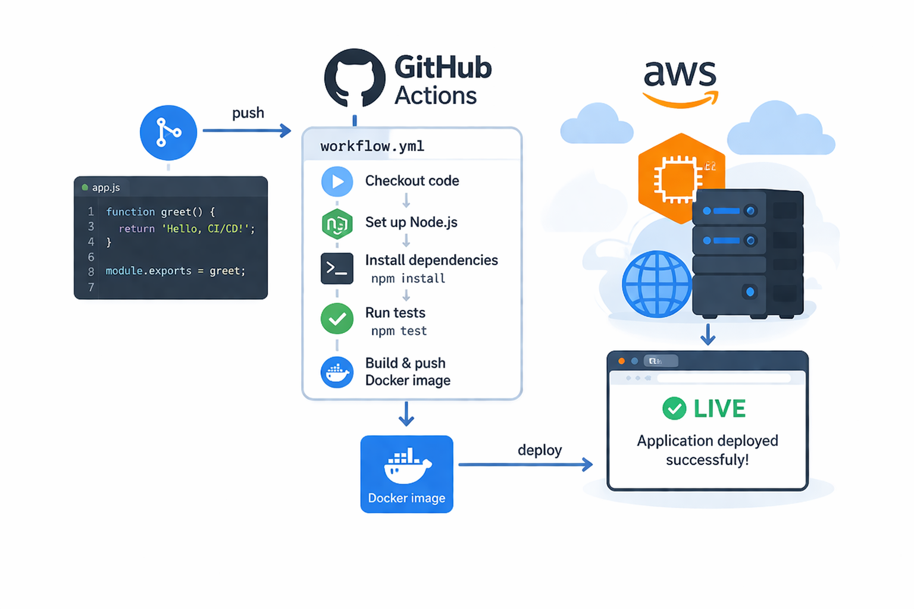

Mise en place d’un pipeline d’intégration et de déploiement continu (CI/CD) automatisé avec GitHub Actions.
Ce projet consiste à automatiser entièrement le cycle de vie d’une application : tests automatiques, build, et déploiement sur une instance EC2 à chaque push sur la branche main.
Automatisation complète du déploiement, bonne pratique DevOps, gain de temps énorme et réduction des erreurs humaines.